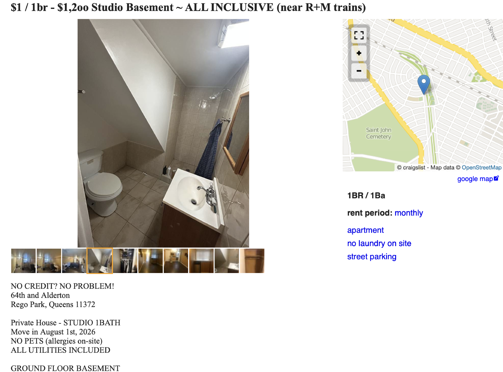
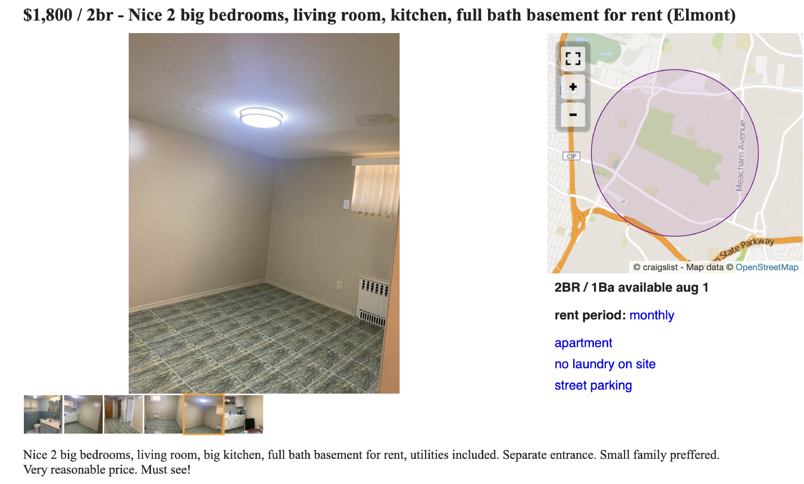

78 Illegal Basement Apartments in Flood-Prone Areas of New York
Five Years After Hurricane Ida, Which Claimed 11 Lives
“NO CREDIT? NO PROBLEM!”
“Very reasonable price. Must see!”
When you browse rental listings on Craigslist, one of the largest local classifieds sites in the U.S., you’ll see phrases like these. All of these listings are for properties in Queens, in eastern New York. The first is a one-bedroom unit with a monthly rent of $1,200, and the second is a two-bedroom unit at $1,800 per month—both below the local market rate.


What these two listings have in common is the word “basement.” This refers to so-called basement apartments. In New York City, such units are considered a violation of city ordinances unless they meet certain safety and health standards regarding evacuation routes, ventilation, and natural light. This is because they pose risks during disasters.
In fact, many lives have been lost as a result. During Hurricane Ida in September 2021, which caused extensive damage in New York, 11 people are believed to have drowned in such basement apartments in areas such as Queens. It is thought they were unable to escape in time when water flooded in.

It has been nearly five years since Ida. An analysis of open data from New York City’s Department of Housing Preservation and Development (HPD) revealed that 1,653 basement apartments were found to be in violation of regulations since Ida alone. This indicates that many residents are still living in basements with poor safety standards.
By borough, Queens had the highest share at 43 percent. It was followed by Brooklyn and the Bronx.
What would happen if a hurricane on the scale of Ida were to strike New York again? I overlaid the locations of the 1,653 illegal basements onto the flood hazard maps published by the City of New York.

The results revealed that 78 of these illegal basements are located in areas projected to flood at current sea levels.
According to flood projections for 2050—when sea levels are expected to rise by up to 2.5 feet—103 buildings will fall within the flood zone.
By 2080, when a 4.8 feet rise in sea level is projected, that number will reach 547.
It is certain that disaster risks will increase significantly in the future due to sea-level rise caused by climate change.

Flushing, in Queens, is home to a large Asian population. After walking north along the main street lined with Chinese restaurants and grocery stores, I saw the apartment about five minutes later. It is located in an area expected to flood even at current sea levels.
“Discontinue use of rooms for living, disconnect plumbing fixtures where illegal and properly seal pipe connections at wash basin, water closet, shower stall, and residential sink at illegal class ''a'' apartment created at cellar.”

The City of New York made this recommendation following an inspection in January of this year. At first glance, it looks like an ordinary residence; you wouldn’t suspect it’s an illegal basement.
What is the actual situation regarding these illegal basements? Using generative AI (GPT-5.4-mini), I classified the 1,653 violations confirmed by the City of New York into four levels of severity: “critical,” “high,” “middle,” and “low.” The criteria for classification were based on the facilities installed inside the units and the condition of the construction work. A reporter also verified the classification results.
The results showed that 16% were classified as “critical,” involving practices such as installing plumbing behind walls or under floors. Violations classified as “high”—such as the installation of complete bathroom units including toilets, sinks, and showers—accounted for 12%. These particularly egregious cases, which were designed with long-term occupancy in mind, totaled approximately 30% of the total.
The driving force behind the persistence of illegal basements is soaring rent. Looking at the median real total rent—adjusted for inflation—Manhattan saw a 17% increase from 2012 to $2,251 in 2023. In Queens, the figure was $1,948, a 13% increase, while in Brooklyn, it was $1,829, a 20% increase.
New York City is also taking measures. In November 2025, Mayor Eric Adams announced his intention to create a program to legalize illegal basements—excluding those in flood-prone areas—if they meet safety standards. The goal is to allow residents to continue living there once legalized and to urgently secure housing for citizens.
However, with New York’s apartment vacancy rate at just 1.4%(2023), the supply-demand situation remains tight. Rising living costs are compounding the problem, contributing to the fact that many people—particularly those living in poverty and immigrants—are still being forced into illegal basements.
If another major disaster were to strike, it would inevitably put people’s lives at risk. If people are still forced to live in illegal basements despite this reality, there is nothing more tragic.